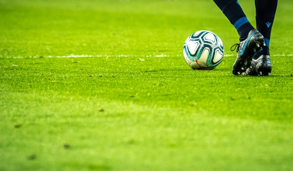

CARROCERÍA
LA SALLE VIRLECHA
PARQUE BIOSALUDABLE
El alumnado de carrocería construye maquinaria de ejercicios adaptada para que sean usadas por personas con discapacidad, aplicando sus conocimientos técnicos para mejorar la salud física comunitaria.
Volver al Inicio